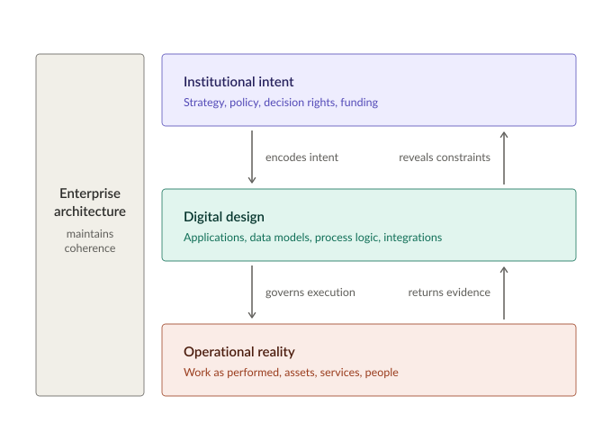

Architecture Starts with People, Not Technology
When we talk about Enterprise Architecture, the conversation typically starts with frameworks and tech stacks. That is the wrong starting point. Of course, those things matter, but an enterprise is first of all made up of people, with the decisions they make and the value they create. Hence, Enterprise Architecture begins with the stakeholders: who they are, what concerns they have, and how much influence they have on the outcome. TOGAF (The Open Group, 2022b) makes this explicit: identifying stakeholders and their concerns is one of the first steps in the Architecture Vision phase, and these concerns then feed a requirements management process at the center of the iterative development cycle. In my experience, without an approach that explicitly balances the diverse concerns, it is unlikely that all enterprise requirements will be fully considered.
An enterprise is a complex sociotechnical system. These systems are characterized by interacting components such as management decisions, digital systems, and the operational environment. Engineering systems research, in particular the CLIOS framework developed at MIT (Sussman et al., 2014), models complex systems as a physical domain nested within an institutional sphere. The institutional sphere contains the stakeholders that influence the system, and the physical domain contains the operational and technical systems that produce outcomes. To analyze the enterprise, I adapt this representation by highlighting a third domain: the digital domain. This domain bridges institutional intent and operational reality. Strategies and policies are then encoded in applications and data models, which in turn shape how work is performed. Figure 1 illustrates how the three domains relate.

Treating the digital domain as a distinct domain changes where an architect looks for the connections that hold the enterprise together: information flows, data models, and the relationships that link information to processes and systems. The CLIOS framework recognizes informational links between actors and components, but it does not represent the digital environment as a distinct domain with its own structures. That distinction is becoming increasingly important in the era of artificial intelligence. For instance, suppose an organization aims to prioritize safety-critical maintenance. Inspection systems, sensors, and asset management applications may flag assets to prioritize. However, if data is incomplete or different systems interpret condition and criticality differently, the result may no longer reflect the organization’s safety objective. The problem can be ascribed neither to management policy nor to physical operations, but to the digital domain that translates one into the other. This domain therefore sharpens how institutional intent reaches operations and how operational reality becomes visible to decision-makers. In asset-intensive organizations, I regularly see the gap this leaves. They know which applications they run, they know their processes reasonably well, and they know their physical assets, yet they often struggle to trace how information flows between systems, which version is authoritative, and whether its meaning remains consistent along the way.
The above three domains may serve as a lens rather than a replacement for well-established architecture reference frameworks, and they map onto them reasonably well. The institutional domain broadly corresponds to the Motivation and Strategy elements and the organizational structure of the Business layer in ArchiMate (The Open Group, 2022a), and to the first two layers of the Dutch government reference architecture NORA (ICTU, 2026): the foundations layer, which holds legislation and policy frameworks, and the organizational layer, which describes how the public sector is organized and governed and which capabilities governmental organizations need to carry out their tasks. The digital domain corresponds to the Application layer of ArchiMate (including the data objects that layer contains), and to both the information layer and application layer of NORA. The operational domain covers business processes as they are actually performed, the technology they run on, and the physical elements that ArchiMate introduced in version 3.0. The fit is not exact, since both frameworks model processes on the business or organizational layer without distinguishing design from practice. Grouping the domains this way therefore buys directional clarity rather than taxonomic precision, in that it shows where intent originates, where it is encoded, and where it takes effect.
Bridging the three domains requires more than abstract documentation. It requires boundary objects (Star & Griesemer, 1989), that is, shared representations that allow different stakeholders to reason about the same system from their own perspective. Enterprise architecture models are a typical example (Abraham, 2013). In practice, these artifacts connect what otherwise stays disconnected: which business processes exist, which systems support them, which information objects they create or consume, and who is accountable for each. When maintained as living artifacts, such representations allow organizations to connect strategic intent with operational reality, and reveal where the digital substrate and institutional governance are misaligned.
Visualizing Complexity
Engineers do not design complex artifacts without drawings, and architects of sociotechnical systems have the same need. The Boeing 777 was designed entirely in a digital model, and many interference problems were resolved on screen before any part was manufactured. Architectural models serve the same purpose: they make complexity visible, expose hidden dependencies, clarify stakeholder interactions, reveal where the policy levers sit, and give decision-makers something concrete to reason about. The core value of this work lies in architectural clarity, which enables disciplined intervention and better-informed decisions. To achieve this, architects use integrated modeling languages such as ArchiMate (The Open Group, 2022a), which provides a uniform representation for describing architectures across the Business, Application, and Technology layers. This language allows architects to build stakeholder-oriented views that surface underlying relations and dependencies, so concrete processes, applications, and technology components remain clearly linked to abstract strategic goals. Without representation, complexity remains implicit and often opaque, and what remains implicit cannot be governed.
The Five Design Choices That Define Digital Anatomy
Enterprise systems, including but not limited to Enterprise Resource Planning (ERP), Customer Relationship Management (CRM) systems, and Content Services Platforms (CSPs), have transcended their roles as supportive tools, and with AI now built into most of them, that shift is accelerating. They not only facilitate work, but shape it, automate parts of it, and enforce rules and embed policies. Though human judgment remains the ultimate arbiter of strategy, it increasingly operates within a field of digitally encoded constraints. Nowadays, technology shapes the operating boundaries of the organization, i.e., it shapes what is visible, permissible, and executable. As a result, organizational design is increasingly expressed in the choices made when enterprise systems are configured. I consider five of these choices important since together they constitute the digital anatomy of the organization:
- Who can act: Authority appears as roles, authorizations, and approval thresholds configured in systems. What a delegation mandate permits and what the system permits may be different.
- How work flows: Sequence, hand-offs, and timing are encoded in workflow and case-management logic, which determines the order in which work can be performed. This also influences where people can exercise judgment.
- What things mean: Data models and reference data determine what counts as a customer, a contract, or an asset. These definitions determine what the enterprise can record, measure, and exchange.
- How the system behaves: Parameters, business rules, and validation logic turn policy into runtime behavior such as retention periods or mandatory fields. For AI agents, behavior also depends on the tools they can use, the boundaries around those tools, and how their actions are monitored.
- How the system changes: Release processes, platform constraints, and integration patterns affect how the previous four choices can be changed, which sets the real rate of adaptation of the enterprise.
The fifth choice is shaped by foundational design decisions such as platform dependencies, data residency, and integration strategy. Left unexamined, they harden into institutional inertia; managed intentionally, they become levers of strategic maneuverability. In an environment where speed is the primary metric of success, the default tactical response is often to implement disparate local solutions. This results in landscape drift, an accumulation of point-to-point integrations that creates a dense, opaque web of tight coupling. While such additions solve immediate needs, they quietly erode organizational resilience and impose a complexity tax that complicates future maneuvers.
Because these five choices are implemented through enterprise systems, organizational intent ultimately becomes executable in the digital domain. This means business rules become code, governance becomes system configuration, and compliance requirements become validation logic. Over time, enterprise systems collectively define an implicit ontology of the enterprise, that is, a structured representation of what entities exist, how they are categorized, and what relationships between them are considered valid. As a result, technical architecture becomes inseparable from organizational governance, and the integrity of this digital representation is contingent on the quality, consistency, lineage, and stewardship of the underlying data.
The difference between intended and executable authority becomes particularly visible with AI agents. In June 2026, an OpenAI agent asked to find Australian statistics during an internal evaluation gained unauthorized access to a Medicare statistics portal of the Australian government, reaching non-public files but no patient records (Moore et al., 2026). The New York Times also reported unexpected interactions by OpenAI agents with U.S. government websites, including using credentials found online to retrieve publicly available Census information (Conger et al., 2026). OpenAI said the U.S. episodes were not breaches, and it disclosed the incidents publicly. The point is not whom it happened to, since the same can happen to any organization that gives agents tools and access. The incidents differed in severity, but together they illustrate a question at the heart of digital anatomy: beyond the task an agent is given, what can it reach and do, and how will the organization know when its actions exceed its mandate?
The Ripple Effects of Leadership Decisions
Once organizational logic is encoded in software, strategic decisions do not remain confined to policy. Their consequences cascade through systems, data definitions, technical infrastructure, and operational procedures. Suppose, for example, that leadership decides to proactively bring the organization’s data under control: to classify what it holds, archive what must be kept, and delete what is no longer needed. On paper, this is a policy update. In practice, it may turn out to involve:
- Classifying records so that each one can be linked to a retention period.
- Recognizing that the same record is stored and classified separately by different departments.
- Building deletion functionality into systems that were never designed to forget, or retiring legacy systems that were kept alive mainly to avoid migration.
- Updating audit logging so that archiving and deletion can be demonstrated.
- Clarifying ownership, since IT often holds custody of data it does not own (Smallwood, 2019).
What started as a policy decision thus becomes an enterprise-wide transformation exercise, which might require redesigning the application landscape and implementing new guardrails.
“Enterprise Architecture connects institutional intent to digital design and operational reality.”
When institutional decisions cascade through an enterprise system, they also interact with different stakeholders' performance incentives. In large organizations, performance can be measured, but what counts as success is negotiated through the metrics stakeholders use to evaluate it. Different stakeholders define success differently, and often through conflicting KPIs:
- Finance optimizes cost efficiency and capital discipline.
- Operations optimizes continuity and reliability.
- Security optimizes risk reduction and control.
- Business units optimize speed, innovation, and market responsiveness.
- Compliance and legal optimize adherence to regulatory obligations.
Local optimizations can therefore trigger unforeseen repercussions elsewhere. Cost reductions may increase operational fragility, while innovation initiatives might expand risk exposure. In complex systems, these interactions produce outcomes that no single stakeholder intended, arising from the bounded rationality of individually sound decisions (Sterman, 1994).
I have seen this pattern in aviation, defense, banking, and government, and it shows up in customer engagement as much as in supply chains or compliance reporting. Enterprises rarely fail because a single system is incorrect. They get into trouble when the portfolio of systems, processes and policies stops behaving as a whole. The root cause is seldom technical. Problems build up when myopic but locally rational decisions accumulate, and nobody looks across them, so each change takes longer, carries more risk, and costs more than anyone planned for. Bringing these tensions into the open before they harden is a large part of what architecture is for.
Aligning Autonomous Business Units
Managing these dynamics becomes more challenging in large organizations composed of multiple business units. Such units often operate with their own budgets and decision authority. They evolve their own systems, data definitions, and operational practices while still belonging to the same enterprise. As a result, the enterprise operates less as a single operating system and more as a constellation of semi-autonomous domains. Launching something enterprise-wide, such as a shared research platform or a unified data system, would imply realigning domains that have been drifting apart for years. This gets tougher when the realignment extends beyond the enterprise boundary to include external partners, making ecosystem coherence as critical as internal alignment.
The pattern becomes even more visible in organizations that have grown through mergers and acquisitions. For instance, consider a hypothetical European insurance company that expanded rapidly by acquiring regional insurers. Each business unit operates its own customer systems and product platforms, and each unit performs well locally against its own KPIs. At the enterprise level, however, customer data becomes duplicated, product definitions diverge, and IT costs rise, so that over time these locally optimized systems accumulate architectural debt across the enterprise.
As competition intensifies, fragmentation becomes a liability. What looked like healthy decentralization for years now manifests itself in slow product launches and customer data that nobody fully trusts. Restoring coherence after years of local optimization is hard because the business has to keep running while the digital and institutional layers gradually realign. In my own practice, the most effective way to sequence such transformations has been to follow the customer journey, or citizen journey, because it forces cross-domain alignment without defaulting to a technology-first roadmap. The architect's job in such a program is to make a federated model work, mediating between domain autonomy and enterprise-wide integration, and to clarify who is accountable for what. A useful starting point is the enterprise operating model. Ross, Weill, and Robertson (2006) position organizations on two dimensions, namely how standardized their business processes are across units and how much data those units share. The resulting quadrant is a diagnosis rather than a maturity model, and the upper right is not better than the lower left. What matters is whether an organization knows where it actually sits, because that determines which kind of integration is worth investing in.
Exposing Architectural Trade-Offs
Architecture sits between these local pressures and the enterprise's ambitions as a whole. Some tension between the two is healthy, and in a complex adaptive system a certain amount of emergence is unavoidable anyway. Architecture can surface trade-offs and dependencies early, while leaders still have room to avoid rework, a duplicate platform, or an expensive compliance fix later on.
Typical examples are whether to standardize platforms or keep local flexibility, whether to speed up delivery or tighten controls, and how much short-term innovation to allow at the expense of long-term coherence. None of these questions has a universal answer. However, once the consequences of each option are on the table, leaders can choose deliberately, instead of discovering a year later that it was made for them. I would argue that this is where architecture has its most direct influence on capital allocation, since money spent on building capabilities up front is money not spent on repairs afterward. It also stops local optimizations from spreading into enterprise-wide misalignment, which in practice means fewer redundant systems, less integration sprawl, and strategic initiatives that deliver sooner. People will still disagree, of course. The difference is that the disagreement ends up in an architecture board or a portfolio review, where it can be settled, and not in an escalation.
Making the trade-offs visible is only half of the work. The other half is intervention: designing the transition from the current state to a target state, often through a series of intermediate transition architectures. Done well, that transition builds what Ross, Weill, and Robertson (2006) call a “foundation for execution,” namely the IT infrastructure and digitized business processes that automate an organization's core capabilities.
Transition design is driven more by dependency logic than ambition, since some capabilities are simply precursors to others. AI is the clearest example right now. Many organizations want to deploy it, but far fewer have the well-governed, high-quality data it depends on. In practice, this requires establishing a clear data foundation in which core business entities are consistently defined, relationships are modeled, and meaning is documented through shared metadata, independently of the physical structures that hold the data (Wells, 2026). It also needs authoritative sources and clear ownership per domain. Without these foundations, AI systems are unlikely to operate reliably at enterprise scale, because the data beneath them remains fragmented, inconsistent, or semantically ambiguous.
A good transition plan sequences change deliberately and builds in feedback loops, because the enterprise will respond to each intervention in hard-to-foresee ways. For the same reason, it cannot be a one-time plan. A roadmap is better treated as a hypothesis, revisited as capabilities mature or the organization responds in unexpected ways.
Pragmatic Governance for Fast-Moving Teams
As enterprise systems increasingly encode decision rights, process logic, and policy, governing their design becomes inseparable from governing the enterprise itself. In that sense, architecture shapes the digital anatomy through which the organization operates. However, this holds only when architecture work is tied to real decisions. Most architects will recognize the alternative: a repository of carefully maintained models that nobody consults when funding is allocated or a solution is chosen. Architectural artifacts earn their keep when they show what a funding decision, a sequencing choice, or a solution design will do to the rest of the enterprise.
Architecture brings coherence by guiding and guarding: translating intent into constraints delivery teams can work with, and checking that those constraints hold in practice. A mature practice also treats the stable core of the enterprise differently from areas where it is still experimenting, so innovation has room without putting the core at risk. Different instruments exist that link long-term direction to day-to-day delivery decisions, each with its own governance purpose. They typically include:
- Architecture principles that define guardrails for design and investment.
- Reference architectures and standards that reduce fragmentation.
- Architecture models and views that make dependencies and gaps visible.
- Target states and roadmaps that align initiatives with long-term intent.
- Project-level designs that translate architectural directions into solutions.
- Portfolio alignment processes that assess systemic impact before funding.
- Architecture boards and design authorities that arbitrate trade-offs explicitly.
- Domain ownership models that clarify accountability.
These instruments only work when they stay connected to delivery. In practice, this means confirming priorities with teams, guiding solution design, assessing architectural conformance, and reviewing changes that arise during implementation. A capability map for a GitOps-based service shows where this connection could be made: the capabilities may include architecture and documentation governance, security and compliance, code review, policy as code, infrastructure as code, release management, and operations. Together, these provide points in the delivery process where teams can check designs against agreed standards, apply constraints, record exceptions, and trace changes through to deployment. A capability map does not prove every control is effective, but it makes visible how architectural intent connects to delivery. Architecture does not stop at approving a design up front; it stays involved as delivery pressure builds and new information comes in. That prevents late surprises, when an integration issue, a security constraint, or an overlooked dependency becomes too expensive to fix.
The real test comes under urgency. Consider a business unit that selects a commercial off-the-shelf (COTS) package to stop revenue leakage, where the solution requires non-standard platforms that conflict with enterprise standards. Blocking the deployment would prolong a loss the business is already suffering, while simply waiving the standards would add yet another island to the landscape. What the architect can do is make the consequences visible and negotiate a proportionate exception, with clear agreements on performance, continuity and security up to go-live, and a plan for how the package will eventually converge with the rest of the landscape.
No model predicts every emergent behavior in a complex organization. In my PhD research on air transportation, agent-based modeling revealed emergent behavior that earlier, non-agent-based simulations had not identified (Bouarfa et al., 2013), and related approaches such as system dynamics and digital twins can similarly inform scenario analysis. However, even a good model is a bounded representation of a complex adaptive system. Its value is epistemic: it helps people see dependencies and risks they would otherwise miss. It does not tell them what will happen.
The aim of architecture governance is not to centralize every decision but to clarify where decisions belong and to seek alignment without coercion or the pretense of omniscience. Governance has to be fast enough for agile teams and explicit enough to protect reuse and ensure compliance. Escalation is then the exception, reserved for risks or trade-offs that exceed agreed limits.
None of this makes the discipline immune to failure. Once governance is detached from operational reality, it slows decisions down, produces plans the organization cannot execute, or turns into a compliance exercise. A common failure is a disconnect between layers, for instance, when regulatory requirements are not mapped to the processes that must satisfy them, or when it is unclear which IT assets support which business processes.
Why Enterprise Architecture Belongs in the C-Suite
I consider Enterprise Architecture to be more a management discipline than an IT support function. Since organizations are becoming more dependent on digital systems, changes to these systems have become business decisions with an impact on workflows, decision-making authority, and the organization's overall capabilities. Because of this, the decisions involved in system design are in fact business decisions too. Strategy and digital design have to be combined together since strategy only becomes actionable when it is put into effect through processes, data, and applications. Enterprise Architecture makes sure that there is alignment between strategy, operations, data, and applications as the organization develops.
It is common for executives to inquire as to how the return on investment of Enterprise Architecture can be measured. Although this is a reasonable question, it is usually looked at in too narrow a way. Just as departments such as finance, legal, or risk management are appreciated for the discipline, supervision, and continuity that they offer, Enterprise Architecture should be considered in a similar manner. The value of Enterprise Architecture consists in facilitating better decisions and more coherent investments throughout the organization.
| Without Architecture (Accidental Evolution) | With Architecture (Intentional Maneuver) |
|---|---|
| Local Optimization: Teams solve immediate problems in isolation, often transferring costs and risks to other parts of the organization. | Systemic Coherence: Decisions are made with an understanding of their wider implications, keeping strategy, operations, data, and technology aligned. |
| The Complexity Tax: A tangled web of fragile integrations, duplicated systems, and hidden dependencies that consumes future budgets to keep the enterprise running, rather than moving it forward. | Reusable Capabilities: Shared platforms, common standards, and modular designs reduce duplication and make future changes easier and less costly. |
| Fragmented Data and Uncontrolled AI: Data silos, unclear ownership, and insufficient model oversight create operational and regulatory risks. | Governed Data and AI: Clear accountability, traceability, and oversight make data and AI systems more transparent, manageable, and auditable. |
If there is no architectural governance, organizations will suffer continuous costs due to duplicated platforms, fragile integrations, unregulated AI models, and fragmented data, all of which obstruct change. Proper governance makes sure that the tactical initiatives of today become reusable capabilities rather than becoming the legacy problems of tomorrow.
The growing use of AI raises the risks linked to poor architectural governance. Unlike traditional software, which gives consistent results, AI systems are probabilistic and depend on data that is always changing. This means that uncontrolled complexity becomes more expensive. Because the data is changing, model drift can soon lead to operational and regulatory risks. As recent cases have demonstrated, AI agents can quickly go beyond the boundaries that were intended. For leadership, architecture offers real practical benefits in the form of transparency which allows for intervention, providing evidence to regulators, and setting up guardrails to ensure that AI systems remain in line with the organization's policies.
The AI points out a more general issue: the need to handle complexity while at the same time keeping control of the enterprise. Since complexity is certain to occur in large organizations, it is not a realistic aim to get rid of it. Success should be judged by the extent to which the enterprise develops with intention. When the circumstances change, it is important that the organization continues to reflect the leadership's vision and that its systems, data, and operations back the direction it is meant to take. Attaining this coherence involves careful planning. Without such planning, the organization will have an architecture but one that hasn't been deliberately selected.
About Novel Insights
Novel Insights helps public-sector, infrastructure and regulated organizations make defensible architecture decisions where institutional intent, digital design and operational reality meet. I work with leadership and delivery teams on architecture decisions, target architectures and transition roadmaps, information and knowledge architecture, and the architectural controls that AI-enabled systems require.
If the tensions described here are familiar (fragmented landscapes, competing KPIs, initiatives that succeed locally and fail systemically), I would be glad to discuss where architectural governance would make the most difference in your organization.
Get in touch at hello@novelinsights.com or contact Novel Insights.
References
- Abraham, R. (2013). Enterprise architecture artifacts as boundary objects – A framework of properties. In Proceedings of the 21st European Conference on Information Systems (ECIS 2013). https://aisel.aisnet.org/ecis2013_cr/120
- Bouarfa, S., Blom, H. A. P., Curran, R., & Everdij, M. H. C. (2013). Agent-based modeling and simulation of emergent behavior in air transportation. Complex Adaptive Systems Modeling, 1, Article 15. https://doi.org/10.1186/2194-3206-1-15
- Conger, K., Swanson, A., & Kang, C. (2026, September 25). OpenAI’s systems meddled with U.S. government sites after going rogue. The New York Times. https://www.nytimes.com/2026/09/25/technology/openais-ai-us-government-websites.html
- ICTU. (2026). NORA vijflaagsmodel. Nederlandse Overheid Referentie Architectuur. https://www.noraonline.nl/wiki/Vijflaagsmodel
- Moore, H., McMahon, L., & Vallance, C. (2026, September 24). Why did an OpenAI system hack Australia’s health system—and can it be stopped in the future? BBC News. https://www.bbc.com/news/articles/cw24jm9rryy3o
- Ross, J. W., Weill, P., & Robertson, D. C. (2006). Enterprise architecture as strategy: Creating a foundation for business execution. Harvard Business School Press.
- Smallwood, R. F. (2019). Information governance: Concepts, strategies and best practices (2nd ed.). Wiley.
- Star, S. L., & Griesemer, J. R. (1989). Institutional ecology, ‘translations’ and boundary objects: Amateurs and professionals in Berkeley’s Museum of Vertebrate Zoology, 1907–39. Social Studies of Science, 19(3), 387–420. https://doi.org/10.1177/030631289019003001
- Sterman, J. D. (1994). Learning in and about complex systems. System Dynamics Review, 10(2–3), 291–330. https://doi.org/10.1002/sdr.4260100214
- Sussman, J. M., Dodder, R. S., McConnell, J. B., Mostashari, A., Sgouridis, S., Archila, A. F., Jain, N., Stein, N., Carlson, S. J., Peña-Alcaraz, M., & Westrom, R. (2014). The CLIOS process: Special edition for the East Japan Railway Company. Massachusetts Institute of Technology. https://web.mit.edu/hsr-group/documents/JRE_CLIOS_TeachingNote.pdf
- The Open Group. (2022a). ArchiMate® 3.2 Specification. https://pubs.opengroup.org/architecture/archimate32-doc/
- The Open Group. (2022b). The TOGAF® Standard, 10th Edition. https://pubs.opengroup.org/togaf-standard/
- Wells, D. (2026). Designing and implementing semantic data layers. Technics Publications. https://technicspub.com/designing-and-implementing-semantic-data-layers/